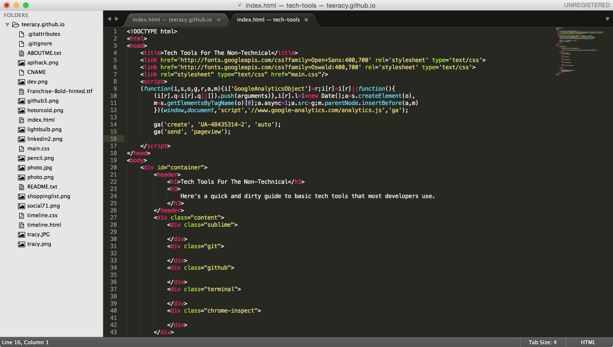
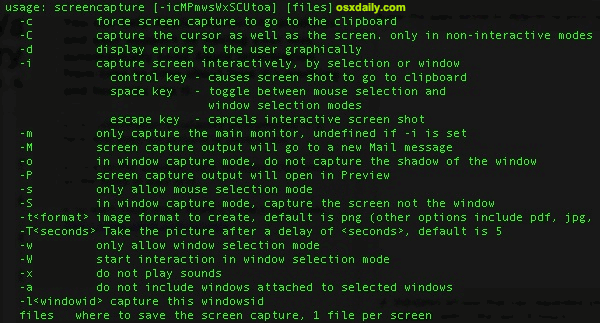
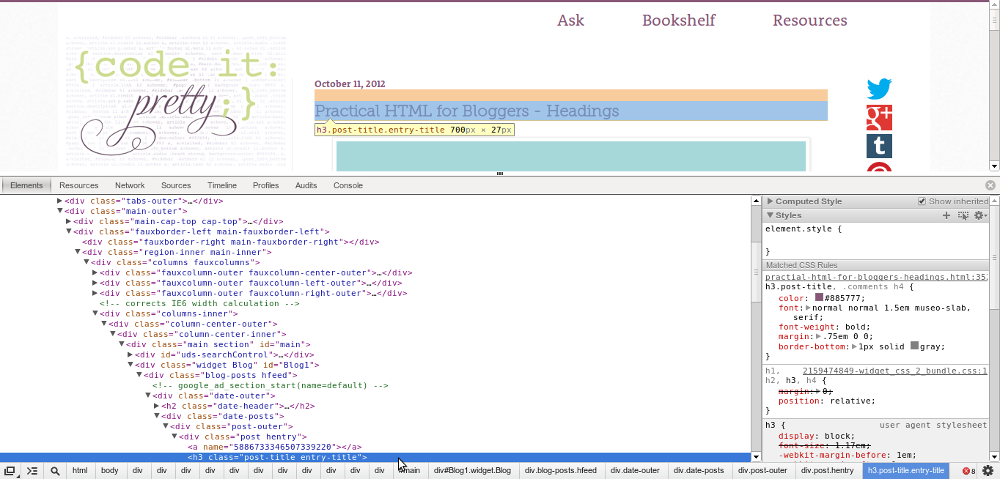

Sublime
Developers use a variety of text editors, but the most common is Sublime Text Editor. It's easy to use and has many additional features or "packages" that can be downloaded. One main feature is syntax highlighting, which color codes different key words/chracters for a variety of languages. Think of it as auto-color coding for the different parts of speech in a langague-- key words will be one color, variables another, etc. It allows developers to easily pick up on small mistakes. Oops my keyword didn't automatically turn blue in Python! It's a pretty easy tip off that something is mispelled.
Stack Overflow

Stack Overflow is the go to place for code help. If you ever have coding bugs/issues/questions, chances are someone else has already hit the same isssue, and it was solved on Stack Overflow.
Terminal
Terminal might look intimidating, but it's just a way for developers to run text-based commands versus using a graphical interface. A few common uses are navigating through folders, moving files, launching a server, compiling code, etc.
If you're brave, fire up your terminal and type "pwd". It stands for "print working directory". You'll get the path of the folder you're currently in.
Git
Git is a versioning control system. It allows developers to collaborate on the same code base at the same time while keeping a great log of each revision that is being made.
Look at the image below, which represents a very basic workflow over time (top to bottom). Each circle represents a commit, which can be thought of as a savepoint. It's a snapshot of what the code base looks like at that given time. A developer can then checkout a copy of the code base at this moment of time onto their personal branch, named 'develop' in this case. The developer would make their revisions to the code base and save it as a commit. In this case the developer makes four commits and then merges their branch back into master. This then updates the master branch with all of the revisions the developer had committed on their branch.
When you have multiple developers working on the same project, how do you reconcile all the different copies of code? Git allows each developer to checkout their own copy, make revisions on their computer, and merge it back into the master copy. Git notices what changes each branch have that master doesn't, and applies those changes to the master branch. The end product is a master branch that contains everyone's changes.

I'm sure you're wondering what happens when two or more people change the exact same snippet of code and try to merge, git will very clearly indicate there's a conflict and require a manual resolution. Ideally two developers wouldn't be working on the same aspect of the same feature at the same time though.
If you'd like a more in depth read on git, I highly recommend this stack overflow article: A Practical Guide To Git
Github
Git is not to be confused with Github. Github is a hosting service that sits on top of git. It stores your code in a repository that can either be public or private. Developers can push their git repositories from their local computers to Github, or pull other repositories of code from Github to their local computers. Github makes it incredibly easy for developers to share code.
Chrome Inspect
Chrome inspect is like a playground for front-end development work. It's a tool built into the google chrome browser (right click "Inspect Element"). The best part about chrome inspect is that it allows developers to quickly see what styles are being applied to elements and the ability to modify styles with real time feedback.
